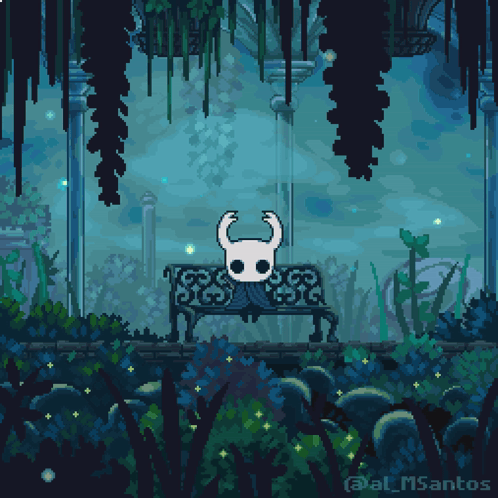
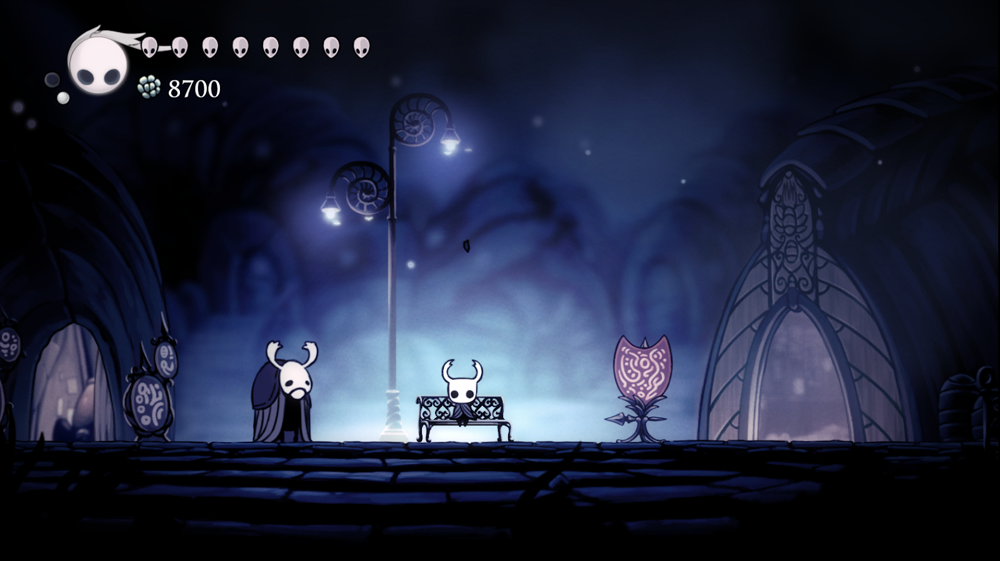
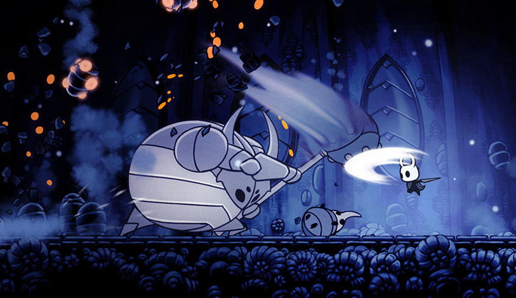
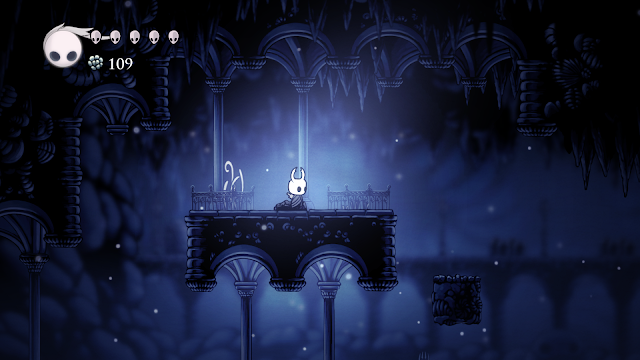

Explore Hallownest
Um reino vasto e arruinado de insetos e heróis. Entre nas profundezas, enfrente as criaturas que se escondem nas trevas e descubra segredos antigos.
Conheça a História

Sobre o Jogo
Gameplay
Ação e aventura em metroidvania 2D com combate preciso e movimentos fluidos.
Arte
Visual desenhado à mão em um estilo gótico de insetos que ganha vida.
Trilha Sonora
Música orquestral evocativa composta por Christopher Larkin.
Galeria


